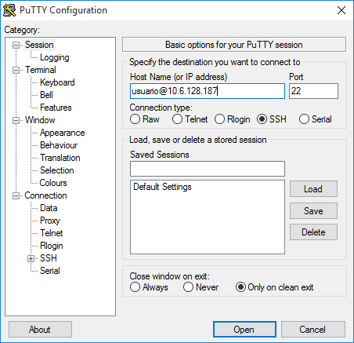
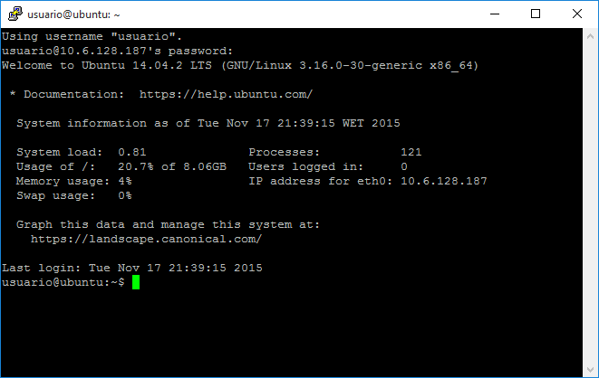
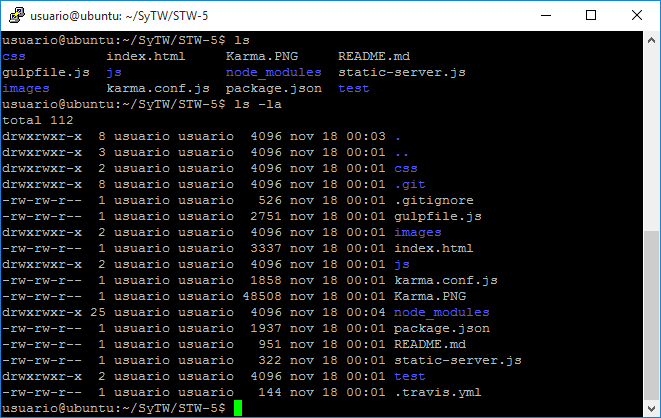
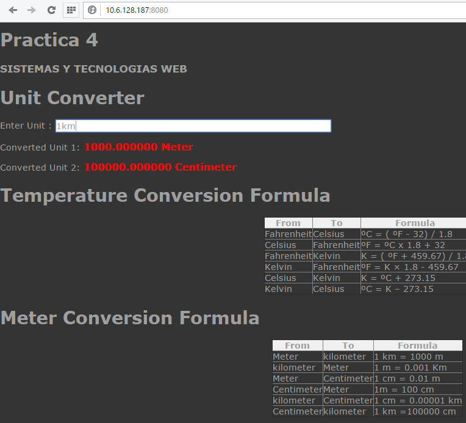
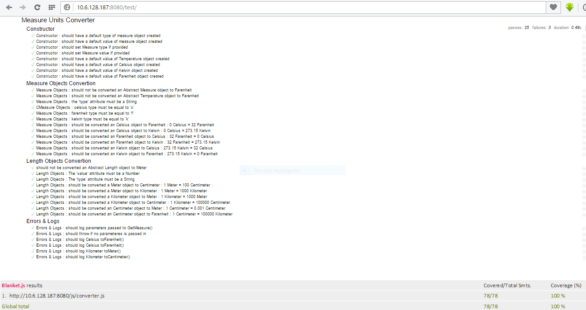

Utilizar el código de la práctica anterior STW -4 Converter para su despliegue en iaas.ull.es. ### Tecnologías utilizadas * HTML * CSS * JavaScript * Expresiones Regulares * Uso de Emmet * Uso de Mocha y Chai * Sinon * Blanket * Web Worker * Karma * Travis & badge de Travis en README.md
media
Aparecerá la máquina virtual disponible.
media
Accederemos a "VNC modificar" y elegiremos "noVNC" para poder visualizar la terminal de la máquina en el navegador
media
Posteriormente se nos pide cambiar la contraseña una vez iniciemos por primera vez sesión.
media
Para ver la ip de la maquina ejecutamos el siguiente famoso comando :
$ ifconfigmedia
Ya la máquina tiene instalados NodeJS y git. Pero con los siguientes comandos instalaremos desde zero todo lo que necesitamos para desplegar nuestra pagina ya que no está instalado todo lo que nos hace falta.
$ sudo apt-get update
$ sudo apt-get install node
$ sudo apt-get install nodejs
$ sudo apt-get install nodejs-legacy
$ sudo apt-get install npm
$ sudo apt-get install gitPara comprobar las versiones instaladas
$ node --version
$ nodejs --version
$ npm --version
$ git --versionmedia
Para desplegamos la práctica anterior en esta maquina tenemos que clonar el repositorio git del proyecto para posteriormente desplegarlo en la máquina.
$ git clone git@github.com:alu4543/STW-5.gitmedia
En el caso de linux y mac podemos guardar los datos de la máquina en el fichero ~/.ssh/config para no tener que recordar el hostname y el usuario para acceder. * consulta ssh config simplifica nuestra vida
Dentro de la red de la ULL: autentificarnos en acceso.ull Ejecutar el comando:
$ ssh vpn
Comprobamos que estamos autentificados en http://acceso.ull.es
media
  
Instalamos las dependencias necesarias de nuestra aplicación, especificadas en el package.json con el comando:
$ npm installCon el siguiente comando arrancaremos el servidor por primera ves:
$ node static-server.jsmedia
http://10.6.128.187:8080 La ip 10.6.128.187 es la de nuestra máquina que habíamos avereguado con el comando
El Puerto 8080 es el puerto de escucha que hemos especificado en static-server.js para ficheros estáticos.
 